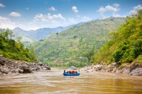
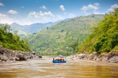

Welcome to Deka-ops white water! Experience the thrill of wild waters, conquer the current and discover the power of the river.


Welcome to Deka-ops white water! Experience the thrill of wild waters, conquer the current and discover the power of the river.
Deka-ops white water is started in the year 2019, when a small group of river enthusiasts sets out to share their passion for outdoors and the thrill of navigating powerful waterways. Our mission has always been more than just adventure- It's about connecting with nature, fostering community and protecting the rivers we cherish. We are designed to provide you with information and resources for rafting trips, kayaking lessons, stand-up paddleboarding and multi-day river expeditions. We offer high safety measures, required gear and preparation tips for participants. Whether you're a seasoned paddler or a first-time adventurer, we invite you to become part of our story. Together let's ride the rapids, embrace the wild, and create memories that will last a lifetime.

 
